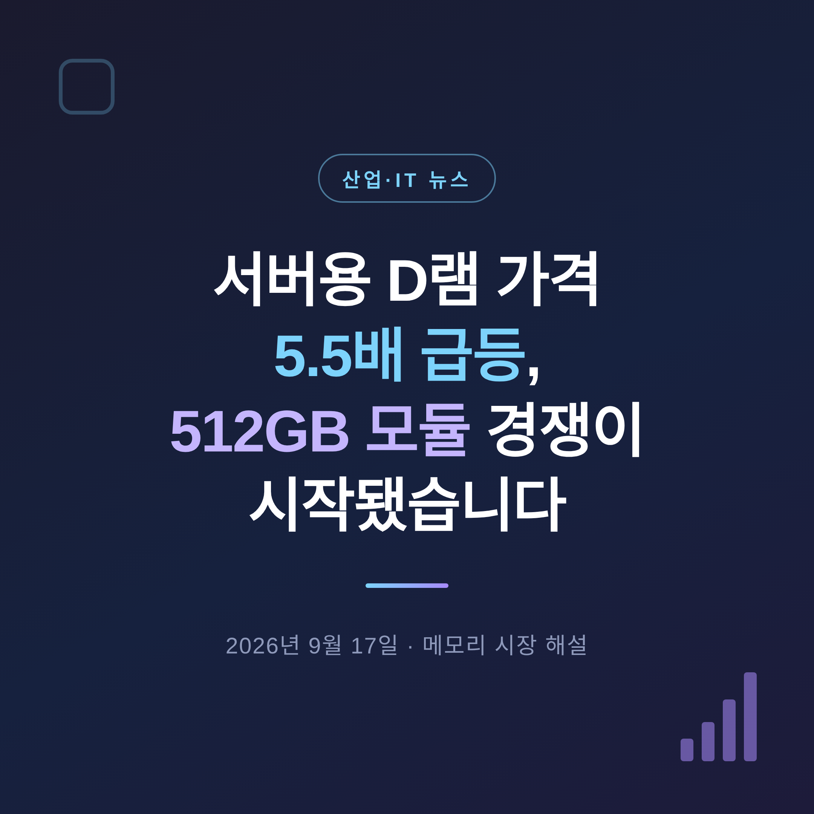
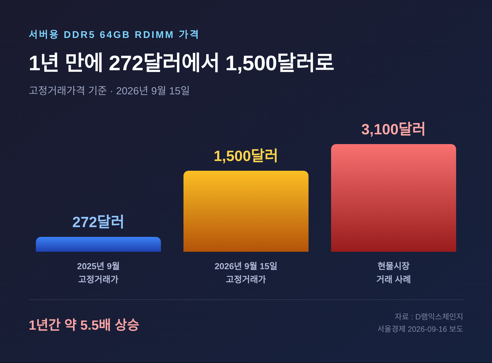
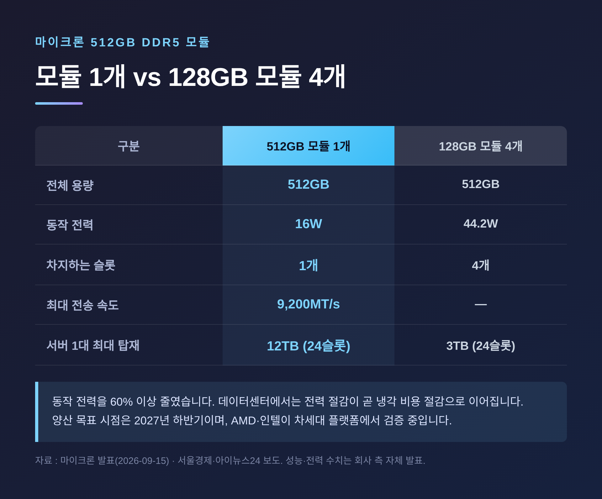
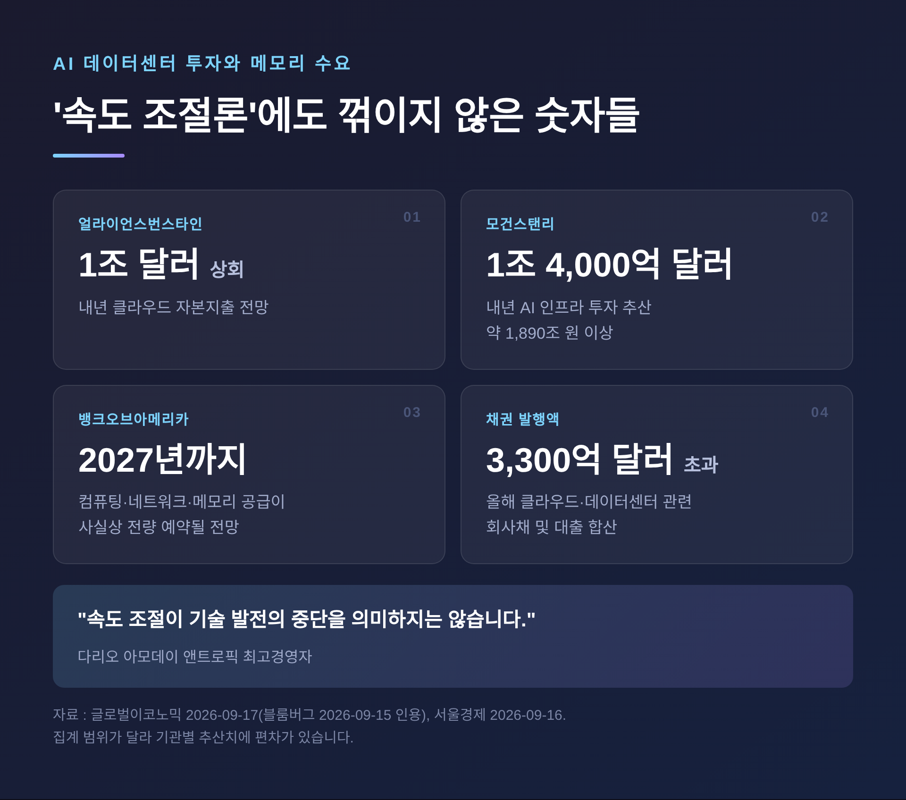
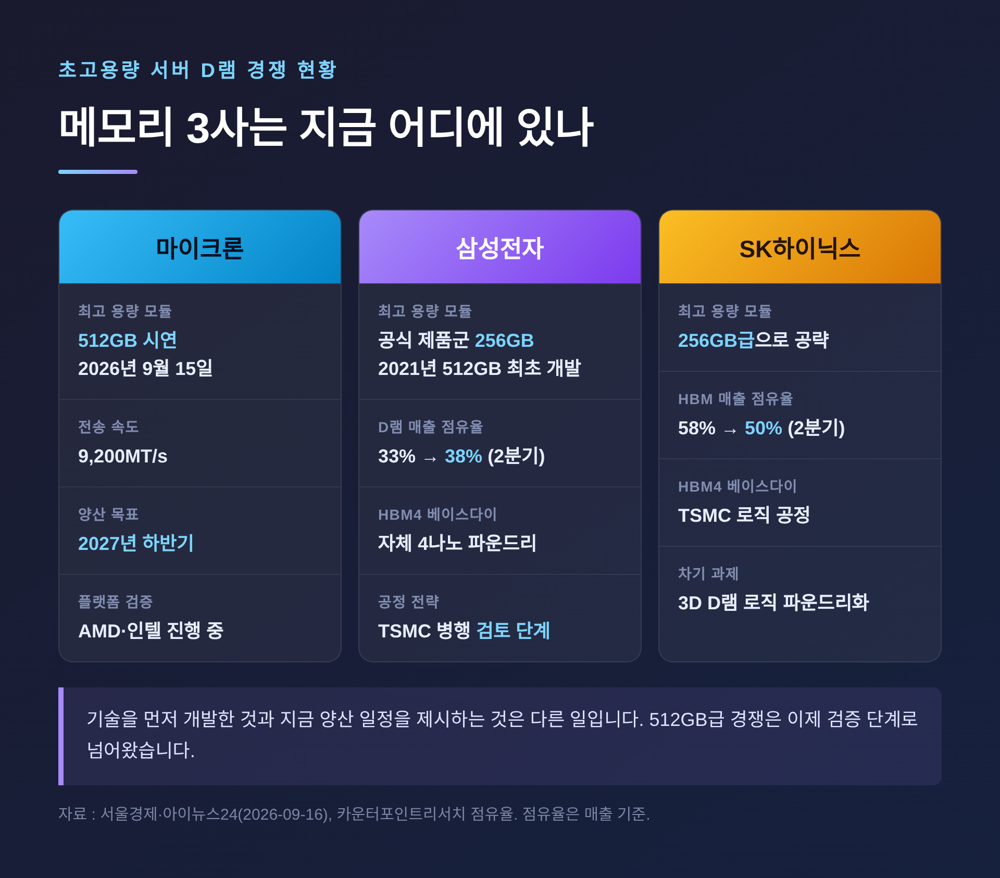
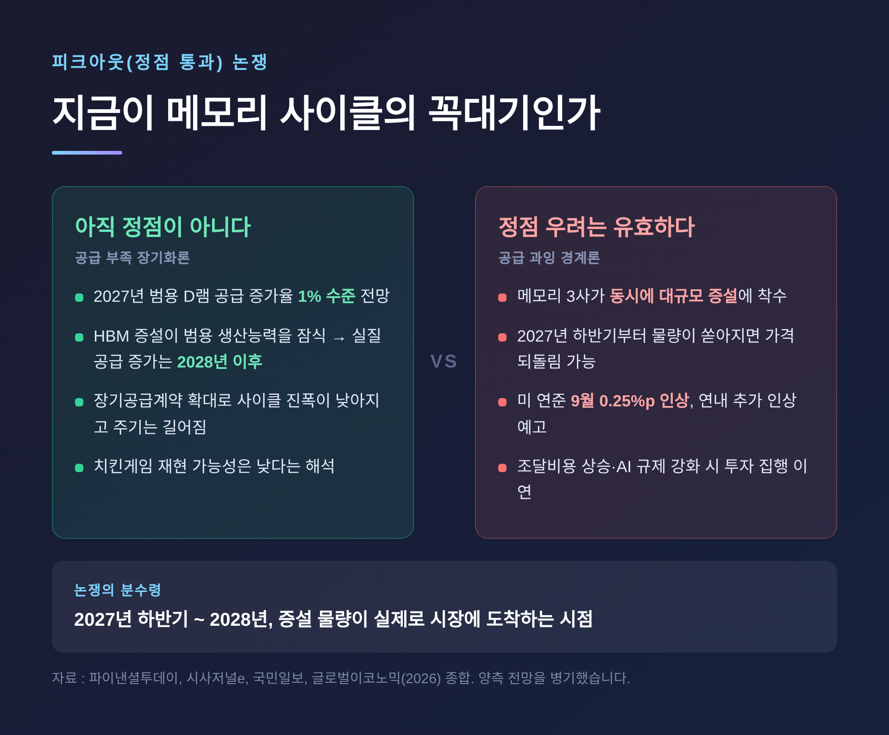

이번 글에서는 서버용 D램 가격이 1년 만에 5.5배로 뛴 사건과, 그 뒤에서 벌어지고 있는 초고용량 메모리 모듈 경쟁을 정리해 보겠습니다.
가격 숫자만 보면 단순한 품귀 현상처럼 보입니다. 그런데 안을 들여다보면 메모리 산업의 경쟁 축 자체가 옮겨가고 있습니다.
세 줄 요약
먼저 가격입니다.
서울경제가 D램익스체인지 자료를 인용해 보도한 내용에 따르면, 2026년 9월 15일 기준 서버용 DDR5 64GB RDIMM의 고정거래가격은 1,500달러였습니다.
1년 전 같은 제품은 272달러였습니다. 약 5.5배입니다.
현물시장은 더 뜨겁습니다. 동일 제품이 3,100달러에 거래된 사례까지 나왔습니다. 기업 간 계약가의 두 배를 넘는 수준입니다.
여기서 용어를 짧게 풀어두겠습니다.
D램은 컴퓨터가 지금 당장 쓰는 데이터를 올려두는 작업 기억장치입니다. DDR5는 현재 주력 세대의 규격이고, RDIMM은 서버용 모듈 형태를 말합니다. 신호를 한 번 정리해 전달하는 레지스터를 달아, 모듈을 스무 개 넘게 꽂아도 안정적으로 동작하게 만든 구조입니다.
범용 제품도 함께 올랐습니다. 8월 PC용 DDR4 8Gb의 평균 고정거래가격은 25달러로 전월보다 4.2% 상승했습니다. 낸드 범용 제품인 128Gb MLC도 30.5달러가 됐습니다. 둘 다 월평균 기준 사상 최고치입니다.
트렌드포스는 3분기 서버용 D램 계약가격이 전 분기보다 13~18% 더 오를 것으로 봤습니다.

가격 급등 소식과 같은 날, 미국 마이크론이 별도의 발표를 내놨습니다.
현지시간 9월 15일, 마이크론은 차세대 서버 플랫폼에서 512GB DDR5 모듈을 시연했다고 밝혔습니다. 여러 서버 플랫폼에서 이 용량의 DDR5를 구동한 것은 세계 최초라는 설명이었습니다.
숫자를 보겠습니다.
기존 차세대 서버용 DDR5 모듈의 최대 용량은 256GB였습니다. 신제품은 이를 두 배로 늘렸습니다.
최대 전송 속도는 9,200MT/s입니다. 초당 92억 회 데이터를 주고받는다는 뜻입니다.
메모리 슬롯 24개를 모두 채우면 서버 한 대에 최대 12TB의 D램을 실을 수 있습니다.
더 눈에 띄는 대목은 전력입니다. 512GB 모듈 하나의 동작 전력은 16W입니다. 같은 용량을 128GB 모듈 네 개로 구성하면 44.2W가 필요합니다. 60% 이상 줄어든 셈입니다.
데이터센터에서 전력은 곧 냉각 비용이고, 냉각 비용은 곧 운영비입니다. 용량만 늘린 게 아니라 운영비 구조를 건드린 발표입니다.
마이크론은 일부 메모리 집약적 데이터 분석 작업에서 256GB 구성보다 성능이 최대 40% 높았다고 밝혔습니다. 다만 이 수치는 회사 측 자체 발표이고, 제3자 검증 결과는 아직 공개되지 않았습니다. 이 점은 감안해서 읽으시길 권합니다.
AMD와 인텔이 차세대 서버 플랫폼에서 검증을 진행하고 있습니다. 양산 목표는 2027년 하반기입니다.

이 발표가 단순한 스펙 자랑이 아닌 이유가 있습니다.
AI 서비스는 두 단계로 나뉩니다. 모델을 만드는 학습과, 만든 모델로 답을 내는 추론입니다.
학습 단계에서는 GPU 옆에 붙는 HBM, 즉 고대역폭메모리가 주인공이었습니다. D램을 수직으로 쌓아 초고속으로 데이터를 퍼 올리는 부품입니다.
그런데 추론 서비스가 본격적으로 퍼지면서 계산이 달라졌습니다.
추론과 대규모 데이터 분석에서는 메모리 용량이 클수록 저장장치와 데이터를 주고받는 횟수가 줄어듭니다. 왕복이 줄면 처리 효율이 올라갑니다. 용량 자체가 성능이 되는 구간입니다.
그래서 서버의 주기억장치인 DDR5에도 HBM의 기술이 넘어왔습니다.
마이크론의 512GB 모듈에는 여러 D램 칩을 수직으로 쌓고 TSV(실리콘관통전극)로 연결하는 적층 기술이 쓰였습니다. 칩에 미세한 구멍을 뚫어 위아래를 전기로 잇는 방식입니다. HBM을 만들 때 쓰던 기술입니다.
예전엔 HBM과 서버용 DDR5가 각자의 영역에서 경쟁했습니다. 지금은 HBM의 제조 기술이 DDR5 쪽으로 흘러 들어와, 경쟁 전선이 하나로 합쳐지는 모습입니다.
삼성전자도 2분기 실적 발표에서 에이전틱 AI 확산으로 서버용 메모리 수요가 강하게 이어지고 있다고 설명했습니다. 스스로 여러 단계를 수행하는 AI가 늘어날수록, 서버가 한 번에 붙들고 있어야 하는 데이터의 양도 커집니다.
"AI 속도 조절론"이라는 말이 올해 내내 시장을 흔들었습니다. 그런데 정작 인프라 투자는 꺾이지 않았습니다.
블룸버그는 9월 15일, 규제 관련 잡음에도 인프라 수요가 탄탄해 반도체 업계의 피크아웃 우려가 과도하다고 보도했습니다. 블룸버그 칼럼니스트 데이브 리는 AI 개발 속도가 늦춰지더라도 데이터센터 구축을 축소하겠다는 움직임은 보이지 않는다고 진단했습니다.
투자 규모 추산은 기관마다 다릅니다. 폭을 그대로 적어두겠습니다.
집계 범위가 달라 숫자가 갈립니다. 다만 방향은 같습니다. 1조 달러라는 문턱을 앞두고 있다는 것입니다.
뱅크오브아메리카는 높은 메모리 가격 자체를 AI 인프라 수요가 살아 있다는 지표로 꼽았습니다. 그리고 컴퓨팅과 네트워크, 메모리 공급업체 전반에서 2027년까지 공급이 사실상 모두 예약될 것으로 전망했습니다.
엔비디아의 데이터센터용 가속기 B200 임대료는 최근 두 달 동안 꾸준히 올라 시간당 5.72달러를 기록했습니다. 올해 클라우드·데이터센터 관련 채권 발행액은 3,300억 달러를 넘어섰습니다.
다리오 아모데이 앤트로픽 최고경영자의 말이 이 상황을 압축합니다. "속도 조절이 기술 발전의 중단을 의미하지는 않습니다."

이제 경쟁 구도를 보겠습니다. 여기에 흥미로운 역설이 하나 있습니다.
512GB DDR5 모듈을 업계에서 가장 먼저 개발한 곳은 삼성전자입니다. 2021년, 8단 TSV 기술을 적용해 개발을 마쳤습니다.
그런데 현재 삼성전자가 공식적으로 내놓은 서버용 DDR5 제품군의 최대 용량은 256GB입니다. SK하이닉스도 256GB급으로 AI·데이터센터 시장을 공략하고 있습니다.
5년 전에 만들 수 있었던 것과, 지금 플랫폼 검증을 통과해 양산 일정을 제시하는 것은 다른 일입니다. 기술 보유가 곧 시장 선점은 아니라는 뜻이기도 합니다.
물론 삼성전자의 전체 흐름은 나쁘지 않습니다. 카운터포인트리서치에 따르면 삼성전자의 글로벌 D램 매출 점유율은 지난해 3분기 33%에서 올 2분기 38%로 올랐습니다. HBM 매출 점유율은 1분기 21%에서 2분기 33%로 12%포인트 뛰었습니다. 같은 기간 SK하이닉스는 58%에서 50%로 내려와, 격차가 37%포인트에서 17%포인트로 좁혀졌습니다.
공정 전략에서도 변화가 감지됩니다.
아이뉴스24 보도에 따르면 삼성전자는 맞춤형 HBM의 베이스다이에 자체 파운드리뿐 아니라 TSMC 공정을 활용하는 방안을 선택지로 열어두고 있습니다. 베이스다이는 HBM 최하단에서 D램과 GPU 사이의 데이터 흐름을 제어하는 칩입니다. HBM4부터는 기존 D램 공정 대신 연산·제어 회로에 강한 파운드리 공정으로 만들기 시작했습니다.
삼성은 지금까지 메모리와 설계, 파운드리, 패키징을 한 회사에서 처리하는 '원스톱 솔루션'을 강점으로 내세웠습니다. 그 강점을 일부 내려놓을 수도 있다는 신호입니다.
고객이 자기 AI 가속기에 맞춰 베이스다이의 연결과 제어 기능까지 따로 설계해 달라고 요구하기 때문입니다. 다만 특정 고객사와 TSMC 공정 활용 계약이 확정된 단계는 아니라고 보도됐습니다. 아직 검토 단계로 읽는 것이 정확합니다.
SK하이닉스는 이미 2024년부터 TSMC와 HBM4·차세대 패키징을 함께 개발해 왔습니다. HBM4 베이스다이에 TSMC의 첨단 로직 공정을 씁니다. 최근에는 3D 적층 D램용 로직다이를 미국 고객과 공동 설계하는 인력을 뽑고 있습니다.

메모리 가격 급등을 다룰 때 빠지기 쉬운 함정이 있습니다. 파는 쪽 이야기만 하는 것입니다.
메모리 3사에는 분명한 호재입니다. 삼성전자 반도체 부문은 2분기에 매출 127조 5,000억 원, 영업이익 89조 2,000억 원을 기록했습니다. 3분기 영업이익 전망치는 107조 4,000억 원으로, 현실화되면 창사 이래 첫 분기 100조 원 돌파입니다.
업계 관계자는 과거 호황이 범용 제품 가격에 크게 의존했던 것과 달리, 이번에는 서버용 D램과 HBM 같은 고부가 제품이 실적을 끌어올리고 있다고 설명했습니다.
반대편은 다릅니다.
엔비디아는 AI 칩을 탑재한 서버 시스템 가격을 내년 초 출하 물량부터 상당수 제품에서 15% 이상 올릴 예정입니다. 차세대 주력인 '베라 루빈'과 '그레이스 블랙웰' 기반 시스템도 포함됩니다. 메모리값을 감당하지 못해 최종 가격에 얹은 것입니다.
국내 조달 현장도 압박을 받습니다. 디지털데일리 보도에 따르면 32GB 메모리 모듈 한 개 값이 300만 원 선까지 올랐습니다. 1년 전에는 100만 원 안팎이었습니다. 반면 서버 예산은 작년 수준에 묶인 곳이 많습니다.
델과 레노버 같은 PC 업체들은 이미 가격 인상 가능성을 고객사에 알렸습니다. 일부는 2026년 모델의 저장장치 용량을 낮추는 방안까지 검토하고 있습니다.
클라우드 사업자 역시 서버를 사서 씁니다. 오른 원가는 결국 사용료로 돌아옵니다. 영국 더레지스터는 클라우드 사업자가 자본지출의 최대 68%를 D램과 낸드에 쓰게 될 수 있다는 분석을 전했습니다.
가격 상승은 한국 메모리 산업의 성적표를 바꾸지만, 그 비용을 누군가는 치릅니다. 이 부분을 함께 보지 않으면 그림의 절반만 보는 셈입니다.
※ 이 글은 정보 제공 목적이며 투자 권유가 아닙니다.
가장 뜨거운 쟁점입니다. 양쪽 논리를 그대로 옮기겠습니다.
아직 정점이 아니라는 쪽은 공급이 물리적으로 부족하다고 봅니다.
2027년 범용 D램의 공급 증가율이 1% 수준에 머물 것이라는 전망이 나옵니다. 신규 투자가 집행돼도 생산능력으로 반영되는 시점이 늦고, HBM 증설이 범용 생산능력을 잠식하기 때문입니다. 실질적인 공급 증가는 2028년 이후에야 본격화된다는 분석입니다.
사이클의 성격이 달라졌다는 주장도 있습니다. 장기공급계약이 늘어 수요 예측력이 올라가면서, 진폭은 낮고 주기는 긴 형태로 바뀌었다는 것입니다. 점유율을 노린 무리한 증설, 이른바 치킨게임이 재현될 가능성은 낮다는 해석입니다.
정점 우려가 유효하다는 쪽은 증설 규모 자체를 경계합니다.
메모리 3사가 동시에 대규모 투자에 들어갔습니다. 2027년 하반기부터 물량이 쏟아지면 가격이 빠르게 되돌아올 수 있습니다.
거시 변수도 있습니다. 미 연준이 9월에 3년 만에 기준금리를 0.25%포인트 올리고 연내 추가 인상을 예고했습니다. 조달 비용이 오르면 빅테크의 투자 집행이 뒤로 밀릴 수 있습니다. 고강도 AI 규제가 도입되는 경우도 같은 방향으로 작용합니다.
어느 쪽이 맞는지 지금 단정할 수는 없습니다. 다만 논쟁의 분수령이 어디인지는 분명합니다. 2027년 하반기부터 2028년 사이, 증설 물량이 실제로 시장에 도착하는 시점입니다.

정리하면 이렇습니다.
첫째, 공급 증설이 실제로 도착하는 시점.
SK하이닉스는 2027년 5월 가동을 목표로 용인 반도체 클러스터 1기 팹을 짓고 있습니다. 완공되면 웨이퍼 생산능력이 월 50만 장 안팎에서 월 70만 장 수준으로 늘어날 전망입니다.
삼성전자는 용인 국가산단 첫 팹의 가동 시점을 기존 계획보다 1~2년 앞당긴 2029년으로 추진하고 있습니다.
마이크론은 대만 파운드리 업체 인수를 통해 2027년부터 본격적인 D램 양산에 들어갈 계획입니다. 2035년까지 미국 투자를 2,500억 달러로 늘려 D램 생산의 40%를 미국에서 담당하겠다는 구상도 함께 내놨습니다.
공격적인 투자에도, 공급 확대가 실제로 체감되는 시점은 2027년 하반기 이후라는 관측이 우세합니다.
둘째, 가격 지속성.
2027년까지 공급이 사실상 예약됐다는 전망이 사실이라면, 가격은 당장 꺾이기 어렵습니다. 관건은 낙폭이 아니라 기간입니다. 고부가 제품 비중이 높아진 만큼, 과거처럼 가격이 반토막 나는 급락보다는 점진적인 하강이 될 가능성이 거론됩니다.
셋째, 한국 메모리 산업에 주는 의미.
하이퍼스케일러의 투자가 이어지는 동안 삼성전자와 SK하이닉스는 판가 방어력과 공장 가동률을 함께 확보할 수 있습니다.
다만 경쟁의 무대가 넓어졌습니다. HBM만 잘하면 되는 국면이 끝나가고 있습니다. 초고용량 DDR5, 베이스다이 공정 선택, 패키징 역량까지 함께 요구됩니다. 마이크론이 512GB에서 먼저 시연 성과를 낸 것은 그 신호로 읽을 만합니다.
증설을 뒷받침할 숙련 인력이 부족하다는 지적도 이미 나오고 있습니다. 돈으로 해결되지 않는 제약입니다.
끝으로 한 마디만 더 드리겠습니다.
64GB 모듈 하나가 1,500달러라는 숫자는 놀랍습니다. 그러나 이번 국면에서 더 오래 남을 변화는 가격이 아니라 경쟁의 모양이라고 생각합니다.
학습용 HBM에서 시작한 싸움이 서버의 주기억장치까지 내려왔고, 메모리 회사가 파운드리와 고객의 설계실을 함께 들여다봐야 하는 구조가 됐습니다.
지금 메모리 산업에서 벌어지는 일을 한 줄로 줄이면 이렇습니다 — 더 빠른 메모리에서, 더 많이 담는 메모리로.
가격은 언젠가 내려올 것입니다. 다만 그때 남아 있는 회사가 어디일지는, 지금 어떤 준비를 하고 있느냐가 정할 것입니다.